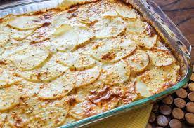

American recipes
-Sweet-
- Brownie
- Cinnamon rolls
- Peach pie
- Pancakes
-Salty-
- Meatloaf
- Weeding soup
- Burger
- Tacos


:max_bytes(150000):strip_icc():format(webp)/21014-Good-old-Fashioned-Pancakes-mfs_001-1fa26bcdedc345f182537d95b6cf92d8.jpg)

:max_bytes(150000):strip_icc():format(webp)/13024-ItalianWeddingSoup1-mfs-2X3-1029-ce1a4649a2f44956a62784fb0322c774.jpg)
:max_bytes(150000):strip_icc():format(webp)/25473-the-perfect-basic-burger-DDMFS-4x3-56eaba3833fd4a26a82755bcd0be0c54.jpg)

Balkan recipes
-Sweet-
- Baklava
- Bakin kolac
- Buhtla
- Lenja pita
-Salty-
- Burek
- Sirnica
- Musaka 
- Klukusa